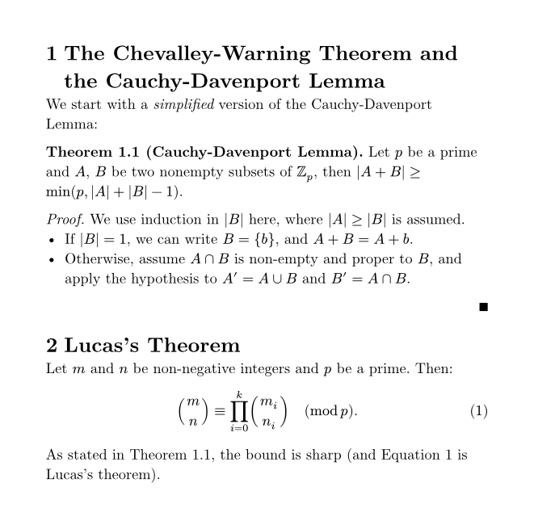

The three modes
Lesson 1 · one mental model that replaces \begin{…}, \command{…} and $…$
By the end of this lesson you will have translated a passage of your own thesis (the Cauchy-Davenport lemma and Lucas's theorem) into Typst, compiled it locally, and seen it render in Computer Modern. Everything else in this course builds on the one idea below.
The idea
LaTeX has one mode with commands sprinkled in. Typst has three modes, and the whole syntax is just the rules for switching between them (Syntax reference).
- Markup → Code: a hash.
#(1+2),#strong[bold],#set text(12pt). The hash is the Typst backslash, but it introduces an expression, not a macro. - Code → Markup: square brackets.
[…]is a content block: markup handed to code as a value.#strong[hi]reads "callstrongwith the content hi". This is what replaces\textbf{…}'s braces. - Anything → Math: dollars.
$x^2$inline; put spaces inside,$ x^2 $, and it becomes a display equation. No\[ \], noequationenvironment. - Inside math, functions need no hash:
$sqrt(x)$,$binom(m, n)$,$cases(…)$. Grouping uses parentheses:$sum_(k=1)^n$.
LaTeX
\section{Setup}
Let $p$ be \emph{prime}.
\begin{itemize}
\item $|A+B| \geq \min(p, |A|+|B|-1)$
\end{itemize}
\[ \binom{m}{n} \equiv \prod_{i=0}^k
\binom{m_i}{n_i} \pmod p \]Typst
= Setup
Let $p$ be _prime_.
- $|A + B| >= min(p, |A| + |B| - 1)$
$ binom(m, n) equiv product_(i=0)^k
binom(m_i, n_i) quad (mod p) $Three traps for LaTeX hands
These are the errors you will actually hit in the exercise. All three were verified against Typst 0.15.1.
1. Multi-letter words in math are variables. $speed$ fails with unknown variable: speed. Typst assumes letters run together form a name, like pi or ZZ. Write prose as a string, $a "is even"$, and spaced letters, $s p e e d$, if you really mean a product. This replaces \text{…} (guide).
2. You can only reference numbered things. @gauss to an unnumbered equation is a compile error, with a hint telling you to add #set math.equation(numbering: "(1)"). Same for headings: #set heading(numbering: "1.1"). Think equation* versus equation, but enforced.
3. Labels come after, references are @. $ … $ <lucas> labels the equation; @lucas renders "Equation 1" automatically, so it already does cleveref's job. The same @key syntax cites a bibliography entry.
The #set lines above are set rules: they change a function's default arguments for the rest of the document. They are the subject of Lesson 2; for now just copy them.
Check yourself
Answer from memory before scrolling back up.
A fresh .typ file starts in which mode?
Markup is the default. You only leave it with # or $.
What does # do in markup?
The hash enters code mode for one expression: a function call, a variable, a set rule. Headings are =, comments //, math $.
What happens when you compile $speed = 3$?
Multi-letter runs are looked up as names. Quote it, "speed", for text, or space the letters for a product.
Which is the Typst equivalent of $a \text{ is even}$?
A string literal inside math is typeset as upright text with normal spacing.
You write @thm pointing at an unnumbered display equation. Result?
Typst refuses to reference something that has no number to show. Enable it with #set math.equation(numbering: "(1)").
In #let twice(x) = [#x #x], what are the square brackets?
Brackets switch from code back to markup. Inside them you need # again to read the variable x.
Practice: translate your own thesis
The file exercises/0001/task.tex is a trimmed excerpt of prerequisites.tex from your thesis. Translate it into Typst with the compiler watching you.
- Open a terminal in
exercises/0001/and runtypst watch starter.typ starter.pdf. Openstarter.pdfin a viewer that reloads on change. - Translate
task.texinto starter.typ, top to bottom. Render the theorem as a bold "Theorem 1.1 (Cauchy-Davenport Lemma)." for now; real theorem environments are a later lesson. - Every save recompiles in milliseconds. Read each error: Typst's messages usually contain the fix.
- Label the Lucas equation and reference it with
@in the last sentence. End the proof with#h(1fr) $qed$. - Compare with the solution. Differences in symbol choice are fine; differences in mode switching are what to study.
Show the rendered solution

Hints, if stuck for more than five minutes
\Zb_p→ZZ_p.\cap→inter.\cup→union.\geq→>=.\{b\}→{b}. Braces are ordinary characters in Typst math.\pmod{p}→quad (mod p).- Primes:
A'works as is. - Full symbol names: typst.app/docs/reference/symbols/sym.
Read next
Primary source for this lesson: the official Guide for LaTeX users. Read the sections "Headings, emphasis, and other markup", "Commands" and "Math". It is short and written for exactly your situation.
Ask your teacher. Anything unclear, an error you can't decode, or a LaTeX construct you want mapped: ask in the chat. Run /teach me Typst again to continue to Lesson 2, set rules and the LaTeX look.